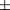

|
 |
 |
 |
|
|
|
|
|
When invoking an EZwgl program, you may pass a subset of the following common command line options:
-display DISPLAY_NAME
This option sets the display name. It is the most common way to
temporarily override the DISPLAY environment.
-geometry WIDTHxHEIGHTXOFFSETYOFFSET
This option sets the geometry and/or location of your application's
main window. The
WIDTHxHEIGHT part specifies a prefered
dimension and the XOFFSETYOFFSET specifies
a prefered location. You may pass only a subset of the geometry
specification. For example, the following specifications are all
valid.
-geometry 300x200+10+10
-geometry 300x200
-geometry 300
-geometry x200
-geometry 300+10-10
-geometry x200+10-10
-geometry -10+10
-geometry -10+
-geometry +10
-visual VISUAL_TYPE
This option selects a visual type supported by your X server.
Supported visual types are:
PseudoColor
TrueColor
DirectColor
Grayscale
StaticColor
StaticGray
-privateColormap
This option is relevent only for PseudoColor/grayScale visuals. It tells EZwgl to allocate a private colormap instead of using the default colormap of your display. It is useful when your application is color hungry, (e.g. an image viewer).
-readWriteColormap
This option is relevent only for PseudoColor/grayScale visuals. It tells EZwgl to use the default colormap of your display and allocate read/write color cells. Use this option if you need exact colors and don't want to use a private colormap. EZWGL will switch to the default colormap if it cannot allocate a minimum of 44 read/write color cells.
-background COLOR or -bg COLOR
This option sets the default background color of your widgets.
-foreground COLOR or -fg COLOR
This option overrides the default foreground color of your widgets. The default foreground color is black.
-iconic
This option informs EZwgl to start the application in
iconic mode. This option only affects your first
toplevel widgets. It has no affects if the initial_state
window manager hint is explicitly set.
-noBackingStore
This option informs EZwgl not to set the backing store attributes for all widget windows.
-xrmfile resourceFile
This option tells an application to read the application resources from the specified file.
-xrm resourceString
This option sets application resources from the specified resource string.
-name name
This option alters the default application name.
-dispXrmDB
Use this option to print the application resources database. It is meant for debugging only.
-synchronous
This option tells EZwgl to run in synchronous mode (for debugging).
|
|
|
|
|
HTML Documentation Maintainance:Arturo Espinosa
<arturo@nuclecu.unam.mx>